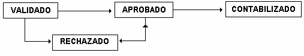

Entrada Interactiva
Las funciones de esta opción se detallan a continuación:
Funciones
Esta opción engloba las siguientes funciones:
- Introducir manualmente los Comprobantes.
- Revisar, modificar, completar o suprimir los Comprobantes si no están contabilizados.
- Aprobar los Comprobantes para que puedan ser contabilizados.
- Consultar los Comprobantes.
- Contabilizar un Comprobante.
Entrada de Datos
Un Comprobante se compone de Encabezado y Asientos. En primer lugar hay que definir el encabezado y luego los asientos. No hay límite para la cantidad de asientos para un encabezado, pero debe tenerse en cuenta que un Comprobante debe cuadrar para que pueda ser aprobado. Asimismo, un asiento está constituido por uno o varios movimientos.
Sesión de aprobación
En un departamento contable es frecuente que existan personas encargadas de la introducción de la mayor parte del Comprobante, pero que están sujetas a una revisión posterior de su trabajo por parte de una persona contablemente más experta, que debe dar su aprobación. CG/Web ofrece esta seguridad a través del concepto de APROBACIÓN.
Al seleccionar la opción de entrada de Comprobantes interactiva, aparece la pregunta: ¿ES SESIÓN DE APROBACIÓN?
- Si el usuario contesta “No”, podrá introducir nuevos Comprobantes, pudiendo, asimismo, consultar, modificar, aprobar o contabilizar sólo los Comprobantes a los que esté autorizado.
- Si el usuario contesta “Si”, podrá consultar, modificar, aprobar o contabilizar cualquier Comprobante, siempre y cuando esté autorizado, pero no podrá introducir nuevos Comprobantes. Al aprobar un Comprobante, CG/Web muestra automáticamente el siguiente del mismo periodo que está pendiente de aprobación, obteniendo una gran rapidez y optimización de tiempo en su trabajo.
Status de Comprobante
Aprobar, rechazar y contabilizar Comprobantes implican únicamente cambios de estado. Un Comprobante en CG/Web puede tener los siguientes estados1:
No aprobado (V)
Este estado también se conoce como “Validado”. Un comprobante con este estado no será contabilizado si se activa el proceso de contabilización.
- Puede ser modificado o rechazado.
- Si está cuadrado puede ser aprobado.
Aprobado (A)
Este comprobante será contabilizado al activarse el proceso de contabilización. No puede ser modificado, pero puede ser rechazado para modificarlo.
Contabilizado (E)
Sus asientos ya están reflejados en los saldos de las Cuentas de Mayor y de Auxiliar correspondientes.
No puede ser modificado en ninguno de sus campos contables (aunque sí en algunos no contables), ni eliminado bajo ninguna circunstancia.
Rechazado (R)
Este comprobante queda "retirado" temporalmente del proceso contable y sus asientos no se reflejarán en los saldos de las cuentas.
Puede ser modificado y también aprobado (en cuyo caso se reintegra al ciclo contable).

Comprobantes que no cuadran
Sólo los Comprobantes que cuadran se pueden aprobar y sólo los Comprobantes aprobados se podrán contabilizar. Los Comprobantes pueden no cuadrar debido a las siguientes circunstancias:
- Un importe es incorrecto.
- Falta un movimiento.
- Sobra un movimiento.
Corregir errores
Ocasionalmente puede ocurrir que un Comprobante se apruebe o rechace por error. Para resolver estas situaciones CG/Web tiene las siguientes facilidades:
- Un Comprobante aprobado puede se rechazado.
- Se permite modificar el contenido de un Comprobante rechazado.
- Un Comprobante rechazado puede ser aprobado.
IVA
En la entrada interactiva de datos puede indicar en el campo CUENTA DE MAYOR una Cuenta de Mayor o un código de IVA. Este código, reconocido por CG/Web, ha de estar definido en de Códigos de IVA y con status ACTIVO.
Para entradas de IVA, de Mayor que se use debe tener siempre como parámetros reservados los campos de SEGUNDO DOCUMENTO, TERCER IMPORTE y REQUIERE NIT. Si no se introduce código de IVA y está usando una Cuenta de Mayor de IVA, trata estos campos como no requeridos.
Validación CIF/DNI
Si en la parametrización de la instalación, se solicitó la validación del CIF/DNI, en todos los casos en que se seleccione una Cuenta de Mayor que lo requiera, se comprueba que el CIF/DNI introducido es correcto. Para ello debe aportarse el prefijo correspondiente al país al cual pertenece el CIF/DNI. Dependiendo del país anotado el programa de validación de CIF efectuará una validación u otra.
Autorizaciones
Las autorizaciones necesarias para poder acceder a esta opción son varias y dependen de cuál es la acción que se desea realizar. A continuación se describen de manera general las autorizaciones requeridas para cada posible acción a realizar y dentro del documento se irán describiendo mediante Notas cuando se requiera una determinada autorización.
Para poder entender más fácilmente la combinación de autorizaciones que intervienen en esta opción, se ha de tener presente que siempre que se selecciona un elemento perteneciente a una de las Clases de Elemento definidas en CG/Web (ver manual de usuario: Convenciones, capitulo: Usuarios y Autorizaciones)
Así pues, de forma general, las Autorizaciones que intervienen son las siguientes:
- Requiere que el usuario esté autorizado por de Elemento Compañías:
- A de Movimientos (002-02/10) para poder consultar los movimientos.
- A de Movimientos (002-02/20) para poder consultar y/o ingresar movimientos.
- A de Movimientos (002-02/30) para poder consultar y/o ingresar y/o contabilizar movimientos.
- A Aprobar Comprobantes (002-04/10) para poder aprobar Comprobantes.
- Requiere que el usuario esté autorizado por de elemento Tipos de Comprobantes.
- A de Movimientos (004-03/10) para poder consultar los movimientos.
- A de Movimientos (004-03/20) para poder consultar y/o ingresar movimientos.
- A de Movimientos (004-03/30) para poder consultar y/o ingresar y/o contabilizar movimientos.
- A Aprobar Comprobantes (004-02/10) para poder aprobar Comprobantes.
- Requiere que el usuario esté autorizado por de Elemento Plan de Cuentas:
- A de Movimientos (003-03/XX) para poder ingresar movimientos en una Cuenta de Mayor que tenga nivel de seguridad consulta igual o inferior al nivel de autorización asignado.
- Requiere que el usuario esté autorizado por de Elemento Tipos de Auxiliar:
- A de Movimientos (006-02/10) para poder consultar los movimientos.
- A de Movimientos (006-02/20) para poder consultar y/o ingresar movimientos.
- Requiere que el usuario esté autorizado por de Elemento Grupos de Cuentas de Auxiliar:
- A de Movimientos (007 -02/10) para poder consultar los movimientos.
- A de Movimientos (007 -02/20) para poder consultar y/o ingresar movimientos.
Las autorizaciones sobre de Elemento Tipo de Auxiliar y sobre de Elemento Grupo de Cuentas de Auxiliar son las dos posibles vías para otorgar autorizaciones sobre las Cuentas de Auxiliar.
Esta ‘duplicación’ de las autorizaciones, permite para un mismo Tipo de Auxiliar diferenciar cuentas en grupos y por tanto, otorgar para dicho tipo diferentes niveles de autorización según el grupo. Mientras que las autorizaciones otorgadas por tipo inciden en todas las cuentas, las otorgadas por grupo, solo lo hacen en aquellas cuentas que agrupa. De esta forma se permite hacer las combinaciones deseadas en autorizaciones de Cuentas de Auxiliar.
Al ingresar a esta opción se despliega la pantalla que muestra 1.2.
Figura 1. Entrada Interactiva.
Compañía:
Digite el código de la compañía en la que se van a introducir, consultar o modificar Comprobantes y presione la tecla ENTER. O seleccione de la lista de compañías que se despliegan al presionar el ícono (), como se muestra en 1.3.
Figura 1. Entrada Interactiva – Seleccionar Compañía.
Escoja la compañía dando clic en el vínculo Select.
Es Sesión de Aprobación:
Marque el casillero de selección con una de las siguientes opciones:
- (SI), si se van a aprobar o modificar Comprobantes existentes (no podrán introducirse nuevos comprobantes)
- (NO), si se van a introducir nuevos Comprobantes. En este caso, si el usuario está autorizado, puede modificar o aprobar los Comprobantes ya existentes.
Autorizaciones:
Para poder acceder a la pantalla que muestra 1.4, el usuario conectado debe tener asignadas las siguientes autorizaciones:
- Si marca el casillero 'No' en SESIÓN DE APROBACIÓN requiere que el usuario esté como mínimo, autorizado a Consultar Movimientos para seleccionada.
- Si marca el casillero 'Si' en SESIÓN DE APROBACIÓN requiere que el usuario esté como mínimo, autorizado a Aprobar Comprobantes para seleccionada
Created with the Personal Edition of HelpNDoc: Full-featured multi-format Help generator